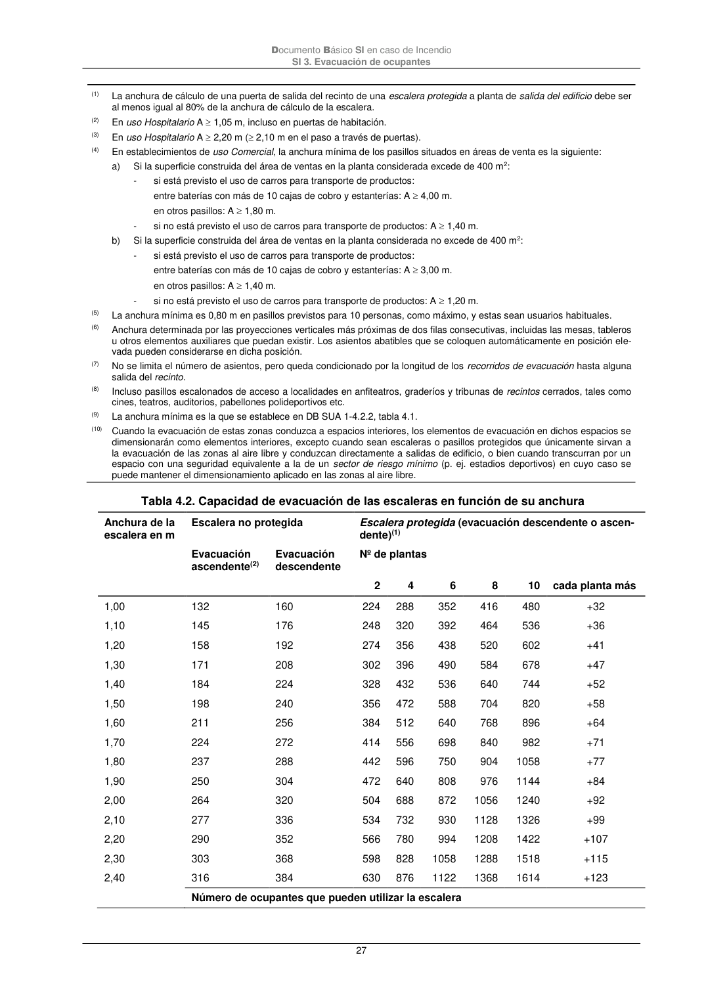

DB-SI Seguridad en caso de incendio · edición 2025-03-04 · capa oficial
Documento DB-SI-oficial · SHA-256 del PDF 0a2e78cd62471d9cc5cfe2efbc6aa39fdbad73c124aea7b039f9de96c141e105
Página física 27 de 92.
Copia fiel del PDF fuente · Fuente oficial
Ficha de la disposición en la fuente oficial
Formato: Texto de la página (Markdown)
Documento Básico SI en caso de Incendio SI 3. Evacuación de ocupantes 27 (1) La anchura de cálculo de una puerta de salida del recinto de una escalera protegida a planta de salida del edificio debe ser al menos igual al 80% de la anchura de cálculo de la escalera. (2) En uso Hospitalario A 1,05 m, incluso en puertas de habitación. (3) En uso Hospitalario A 2,20 m ( 2,10 m en el paso a través de puertas). (4) En establecimientos de uso Comercial, la anchura mínima de los pasillos situados en áreas de venta es la siguiente: a) Si la superficie construida del área de ventas en la planta considerada excede de 400 m2: - si está previsto el uso de carros para transporte de productos: entre baterías con más de 10 cajas de cobro y estanterías: A 4,00 m. en otros pasillos: A 1,80 m. - si no está previsto el uso de carros para transporte de productos: A 1,40 m. b) Si la superficie construida del área de ventas en la planta considerada no excede de 400 m2: - si está previsto el uso de carros para transporte de productos: entre baterías con más de 10 cajas de cobro y estanterías: A 3,00 m. en otros pasillos: A 1,40 m. - si no está previsto el uso de carros para transporte de productos: A 1,20 m. (5) La anchura mínima es 0,80 m en pasillos previstos para 10 personas, como máximo, y estas sean usuarios habituales. (6) Anchura determinada por las proyecciones verticales más próximas de dos filas consecutivas, incluidas las mesas, tableros u otros elementos auxiliares que puedan existir. Los asientos abatibles que se coloquen automáticamente en posición ele- vada pueden considerarse en dicha posición. (7) No se limita el número de asientos, pero queda condicionado por la longitud de los recorridos de evacuación hasta alguna salida del recinto. (8) Incluso pasillos escalonados de acceso a localidades en anfiteatros, graderíos y tribunas de recintos cerrados, tales como cines, teatros, auditorios, pabellones polideportivos etc. (9) La anchura mínima es la que se establece en DB SUA 1-4.2.2, tabla 4.1. (10) Cuando la evacuación de estas zonas conduzca a espacios interiores, los elementos de evacuación en dichos espacios se dimensionarán como elementos interiores, excepto cuando sean escaleras o pasillos protegidos que únicamente sirvan a la evacuación de las zonas al aire libre y conduzcan directamente a salidas de edificio, o bien cuando transcurran por un espacio con una seguridad equivalente a la de un sector de riesgo mínimo (p. ej. estadios deportivos) en cuyo caso se puede mantener el dimensionamiento aplicado en las zonas al aire libre. Tabla 4.2. Capacidad de evacuación de las escaleras en función de su anchura Anchura de la escalera en m Escalera no protegida Escalera protegida (evacuación descendente o ascen- dente)(1) Evacuación ascendente(2) Evacuación descendente Nº de plantas 2 4 6 8 10 cada planta más 1,00 132 160 224 288 352 416 480 +32 1,10 145 176 248 320 392 464 536 +36 1,20 158 192 274 356 438 520 602 +41 1,30 171 208 302 396 490 584 678 +47 1,40 184 224 328 432 536 640 744 +52 1,50 198 240 356 472 588 704 820 +58 1,60 211 256 384 512 640 768 896 +64 1,70 224 272 414 556 698 840 982 +71 1,80 237 288 442 596 750 904 1058 +77 1,90 250 304 472 640 808 976 1144 +84 2,00 264 320 504 688 872 1056 1240 +92 2,10 277 336 534 732 930 1128 1326 +99 2,20 290 352 566 780 994 1208 1422 +107 2,30 303 368 598 828 1058 1288 1518 +115 2,40 316 384 630 876 1122 1368 1614 +123 Número de ocupantes que pueden utilizar la escalera
